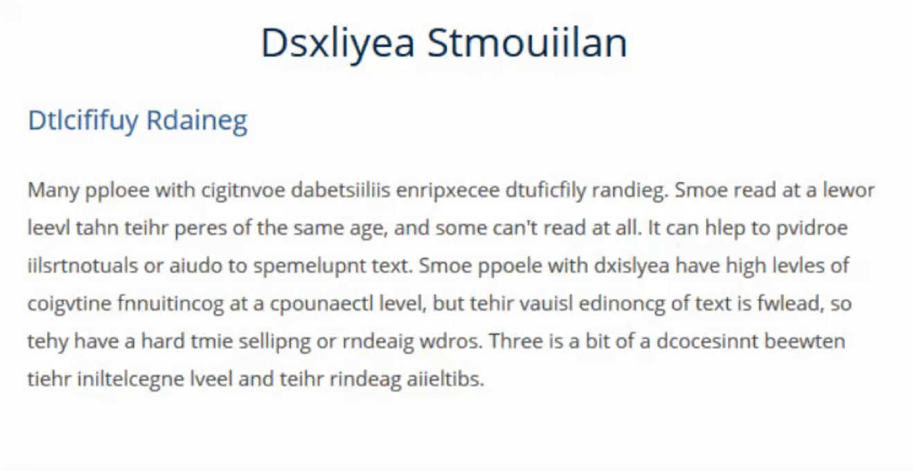

What is the difference between accessibility and usability?
What is a disability?
Is accessibility all about disability?
Definitions
Web accessibility: The qualities that make a web experience available to the widest possible group of users independent of ability or disability.
Usability: The qualities that make a web experience intuitive and easy to use. A usable web design aligns with the purpose for which the web site was created.
Disability: A disability is any continuing condition that restricts everyday activities.
For people with mild hearing loss, speech can be difficult to understand, especially if background noises are present.
Moderate
Sounds below 50 decibels.
For people with moderate hearing loss, a hearing aid may be required.
Severe
Sounds below 80 decibels.
For people with severe hearing or profound loss, communication may be done through sign language; others rely on lip-reading techniques.
Profound
Sounds below 95 decibels.
Any sound in some cases.
Motor-skill disabilities
Traumatic injuries
Spinal cord injury
Loss or permanent damage to limb(s)
Diseases and Congenital Conditions
Cerebral palsy
Muscular dystrophy
Multiple sclerosis
Spina bifida
ALS (Lou Gehrig’s Disease)
Arthritis
Parkinson’s disease
Cognitive disabilities
By far the most common type of disability is cognitive disabilities. Cognitive disabilities can arise as a result of congenital conditions that are with an individual from birth, or developmental conditions that are with a person from a young age. They can also result from traumatic injury, infections, chemical imbalances, or other conditions later in life.
In simple terms, a person who has a cognitive disability has trouble performing mental tasks that the average person would be able to do.
Cognitive disabilities for IT consideration
Intellectual disability
Developmental delay and/or disability
Learning disabilities such as Dyslexia and ADHD.
This category includes:
Intellectual disability
Developmental delay and/or disability
Learning disabilities such as Dyslexia and ADHD.
Cognitive disabilities for IT consideration
Limited Comprehension: Inability to understand complex ideas.
Low Tolerance for Cognitive Overload: Frustration when sensing difficult situations, or when there are too many things in their environment happening at the same time.
Limited Problem-Solving Skills: When presented with a problem to solve, some people with cognitive disabilities may simply be unable to solve it.
Short-Term Memory Loss: May have a hard time remembering things from one moment to the next. Inability to focus on new information, so they don't retain it in the short term.
Attention Deficit: Many people with cognitive disabilities experience difficulty reading. Some read at a lower level than their peers of the same age, and some can't read at all.
Difficulty Reading: May have a hard time remembering things from one moment to the next. Inability to focus on new information, so they don't retain it in the short term.
Difficulty Understanding or Using Math: Some people experience math anxiety, which is an emotional or psychological fear that grips some people when confronted with math problems. This is less of an intellectual deficit than a psychological deficit.
Seizures: Seizures are abnormal or erratic electrical impulses in the brain that interfere with a person's ability to process information or, in some cases, control voluntary muscle movement.
Dyslexia Simulation

Experiences of Students with Disabilities
Assistive technologies
Assistive technologies are products, equipment and systems that enhance activities for people with disabilities.
For digital accessibility, Assistive Technologies are often broken down into two categories:
Input devices
Output devices
Input devices aid people when interacting with websites and applications.
Output devices aid people when presenting information from websites and applications.
Input devices
Input devices include: Accessible keyboards, Track pads, Head wands, Mouth pieces, Puffers, Switches, Touch screens, Eyetrackers, Voice activation software, etc.
Output devices
Output devices include: Magnifiers, Screen Readers, Refreshable Braille Devices etc.
Canadian Human Rights Act – Sections 3, 5, 7 and 10
Canadian Charter of Rights and Freedoms –Section15(1)
Context – The Accessible Canada Act
The Accessible Canada Act (Act) came into effect July 11, 2019. This will benefit everyone in Canada, especially persons with disabilities, by helping to create a barrier-free Canada.
Requires the government to create accessibility standards and regulations in priority areas: employment, built environment, procurement, transportation, communications, program and service design and delivery, information and communications technologies.
Applies to sectors under federal jurisdiction.
Key goals:
Identify, remove and prevent barriers to accessibility.
Bring leadership and cohesion to federal efforts to improve accessibility.
Create more consistent experiences of accessibility across Canada.
Under the legislation, all federally-regulated organizations, including ESDC, will be required to:
Prepare and publish an Accessibility Plan developed in consultation with persons with disabilities (first Plan to be published in 2022)
Establish a process for receiving and addressing feedback from employees and clients.
Report publicly on progress achieved.
A transformational shift in addressing disability and accessibility barriers through a proactive approach.
Context – Accessibility Standards Canada (ASC) / Canadian Accessibility Standards Development Organization (CASDO)
Technical committees will consult with experts in order to develop accessibility standards for people with disabilities. ASC will make recommendations to the minister responsible to adopt as regulations.
Will conduct research on identifying and removing barriers, and disseminate information about best practices.
Persons with disabilities will lead ASC. The aim is for the majority of board members to be Canadians with disabilities.
Context – The Public Service Accessibility Strategy
Treasury Board Secretariat (TBS) released the Public Service Accessibility Strategy in May 2019 to help federal departments meet the requirements of the Act.
Based on results from broad consultations with thousands of public servants and experts on how to make the Government of Canada the most accessible and inclusive public service in the world.
Strategy identifies 5 goals for action at the Government-wide level and at the Departmental level, along with specific measures of success to be achieved by 2021
Improving recruitment, retention, and promotion of persons with disabilities.
Enhancing the accessibility of the built environment.
Making information and communications technology (ICT) usable by all.
Equipping public servants to design and deliver accessible programs and services.
Building an accessibility-confident public service.
The Strategy provides guidance for departments to assess the state of accessibility in their organization, take early action in areas where immediate improvements can be made and set out a plan for achieving sustainable and tangible progress over time.
Information and Communication Technology (ICT)
Current state:
91% of ESDC internal applications do not meet accessibility standards
88% of commercial-of-the-shelf products for staff do not meet accessibility standards
Average resolution time for an IT assistive technology request is currently 30 days
Some ICT processes already include Accessibility considerations.
On flight ICT projects did not include Accessibility in the requirements
Well established assessment process for ICT accessibility in place.
Central ICT intake process for Accessibility
Desired state (proposed):
ESDC employees and clients can access and use all ICT regardless of ability or disability
All IITB processes take into consideration accessibility, where applicable, from the start of projects to create inclusive environments
Measures of success by 2025 (proposed):
100% ICT products acquired are accessible
100% new ICT contracts have accessibility requirements as of 2020
Internal solutions (ITRDS, NWS) that meet accessibility standards increased to 25 % by 2021, 60% by 2022 and 100% by 2025
Off-the-shelf products (e.g. PeopleSoft) that are accessibility compliant increased to 25% by 2022, 50% by 2023 and 100% by 2025
100 % of employees requiring an accessible workstation have one
ESDC employees with disabilities have improved access to pensions applications
Guideline on Making Information Technology Usable by All
Acquiring or developing internal-facing or public-facing IT solutions and equipment, including web content and all IT tools and equipment used by federal public servants.
Considering accessibility in the lifecycle management process for existing IT solutions and equipment, including web content.
Departments, agencies and organizations are strongly encouraged to:
Ensure that accessibility features are enabled for their IT solutions and equipment.
Leverage enterprise tools and capacity to ensure that internal‑facing IT solutions and equipment are accessible for public servants.
Work with the IT Accessibility Office (ESDC) to identify and deploy accessible tools and technology, and to remove remaining accessibility barriers associated with IT.
Leverage their existing in-house accessibility programs when meeting Government of Canada accessibility requirements.
Work in the open and use open‑source software to support others in efforts to develop accessible common IT systems across departments, agencies and organizations.
Accessibility Compliance Project
Current state analysis reveals 303 internal applications and over 500+ software products ( Commercial-off-the shelf, freeware, open source or other government commissioned products) in-scope for this project.
The mandate of the project is to render all applications/products accessible by 2025.
This project will model its strategy based on what was used for external client facing solutions by
Using an Incremental prioritized approach.
Harmonizing accessibility changes with other planned enhancements to minimize costs and risks to operations.
Utilizing a planned and phased approach to meet our goals.
*Advisory techniques are not required for conformance
Four principles of accessibility (POUR)
Perceivable
Available through sight, hearing, or touch
Operable
Compatible with keyboard
Understandable
User-friendly, easy to comprehend
Robust
Follows standards and works across all browsers, assistive technologies, and mobile devices
Is the web page perceivable?
Information and user interface components must be presentable to users in ways they can perceive.
Do images have alternative text?
Is the tab order and read order logical and intuitive?
Have you avoided using visual characteristics to communicate information (e.g., “click the circle on the right” or “required fields are in red”)?
Does the interface have sufficient contrast between text color and background color?
Does the content scale well when text is enlarged up to 200 percent?
Any accessibility question in the official language of your choice!
Roch Lambert, CPACC Manager, IT Accessibility office - ICT Accessibility Audit and Strategy (ICTAAS) Employment and Social Development Canada / Government of Canada roch.lambert@hrsdc-rhdcc.gc.ca / Tel: 819-654-0498 / BlackBerry: 343-542-1013